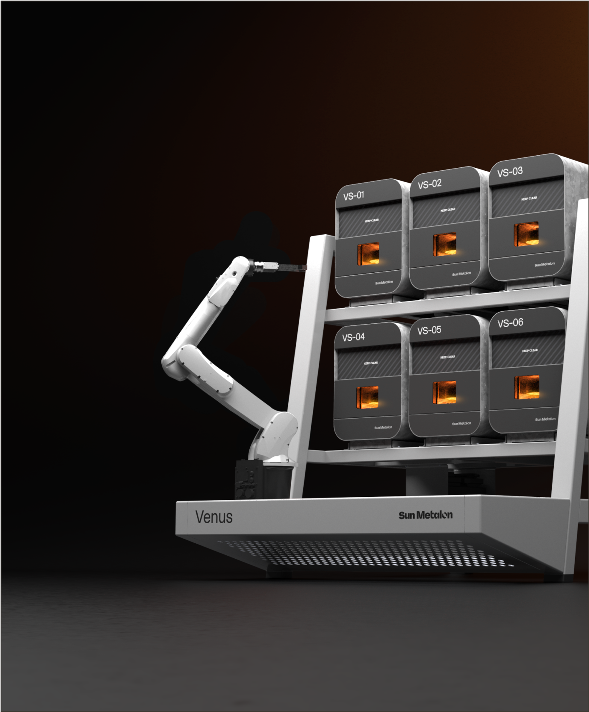
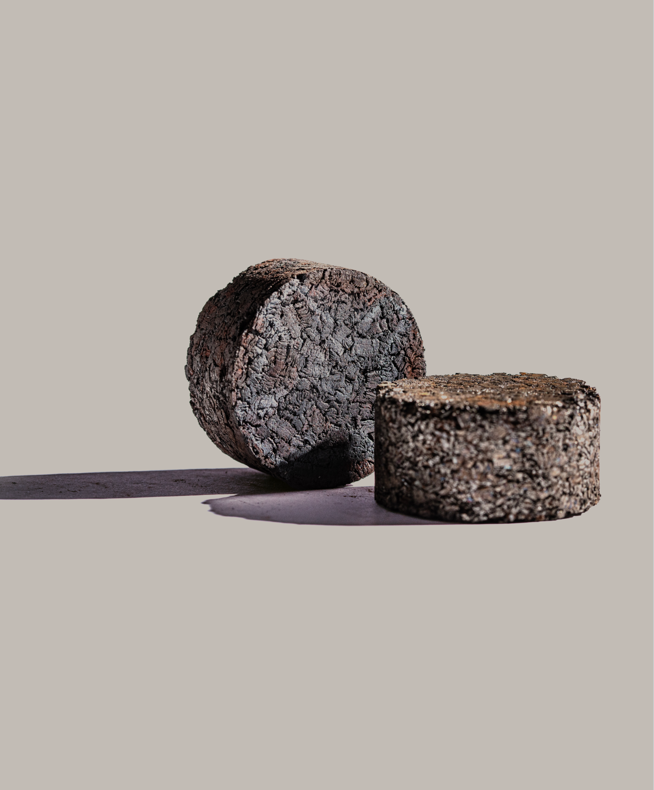

A metal recycling technology that transforms contaminated, low-value swarf into pristine, high-value metal.
Product Specifications
On-site Units
The six-furnace Venus-L6 hits the sweet spot for many foundries and machine shops.

Dry Briquettes Produced
Contaminated metal pucks are recycled into clean, dry pucks, composed of the original alloy, that are ready for the melt pool.

Zero-CO2 emissions processing
Sun Metalon's metal recycling process produces zero CO2 emissions.